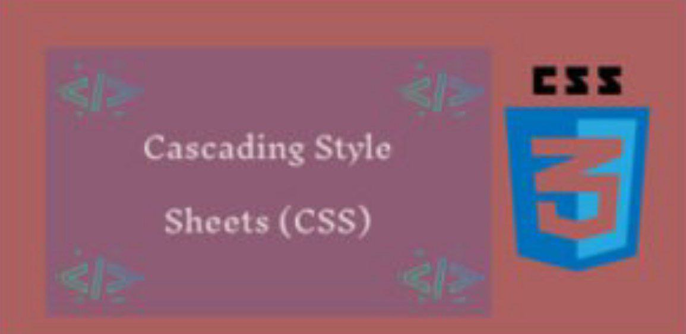
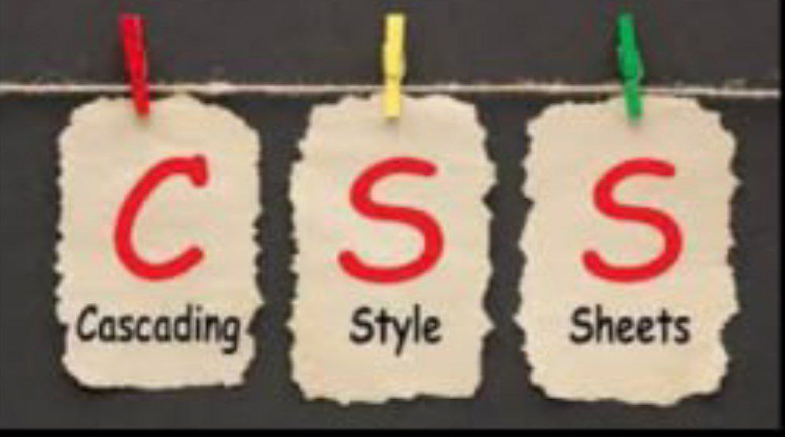
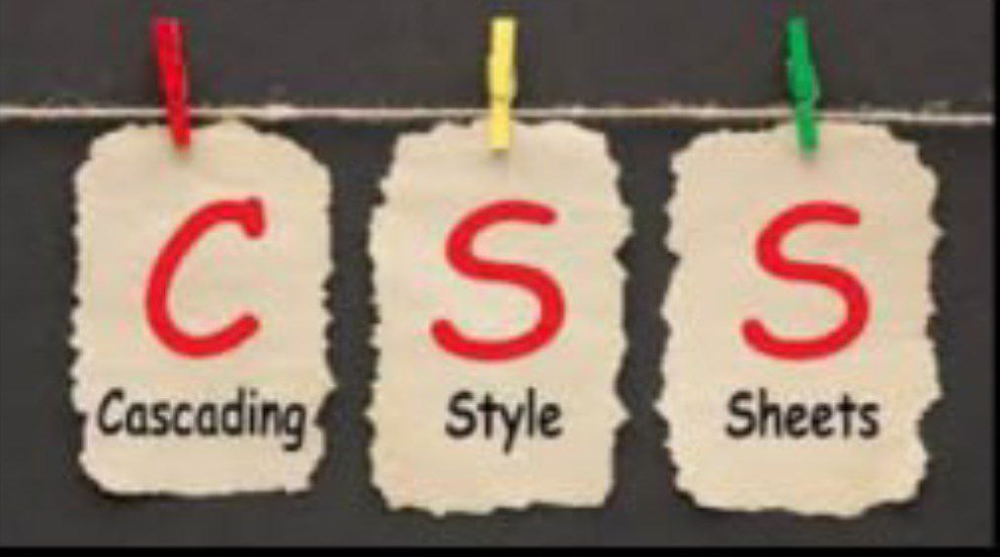
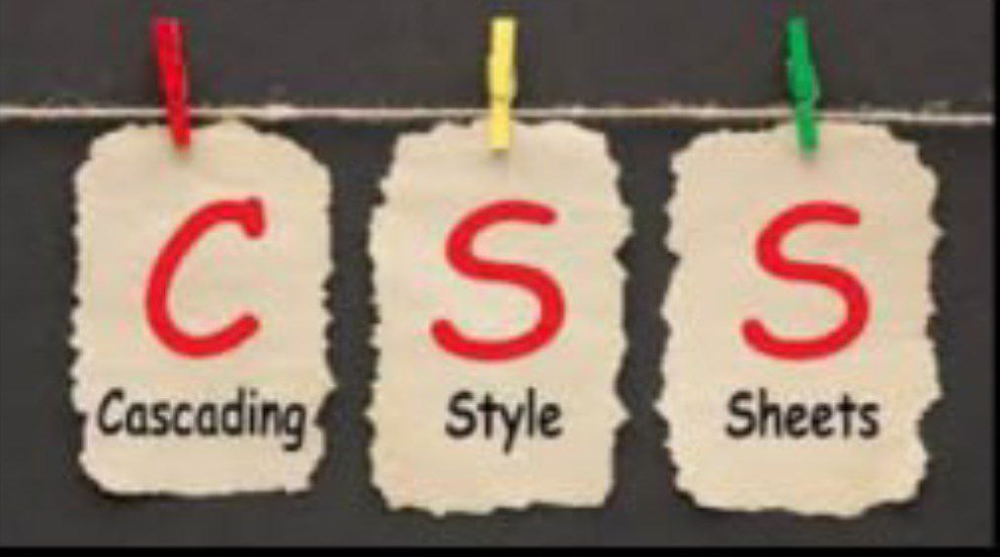

CSS veb-sahifa yaratuvchilari tomonidan ranglar, shriftlar, alohida bloklarning tartibini va ushbu veb-sahifalarning paydo bo'lishining boshqa jihatlarini belgilash uchun ishlatiladi. CSS-ni ishlab chiqishning asosiy maqsadi veb-sahifaning (HTML yoki boshqa belgilash tillari yordamida ishlab chiqarilgan) mantiqiy tuzilishining tavsifini ushbu veb-sahifa (hozir rasmiy CSS tili yordamida ishlab chiqarilgan) tashqi ko'rinishi tavsifidan ajratish edi. Ushbu ajratish hujjatning mavjudligini oshirishi, ko'proq moslashuvchanligi va taqdimotni boshqarish qobiliyatini ta'minlab, shuningdek tarkibiy tarkibdagi murakkablik va takrorlanuvchanlikni kamaytirishi mumkin.
Cascading Style Sheets CSS

 

